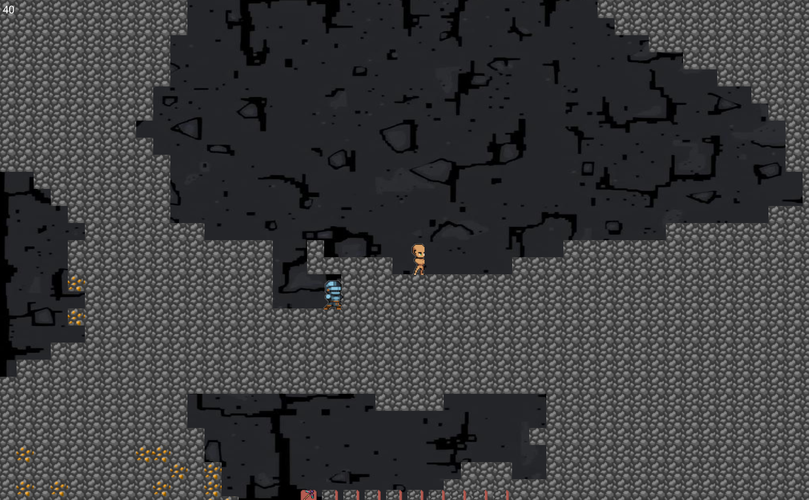
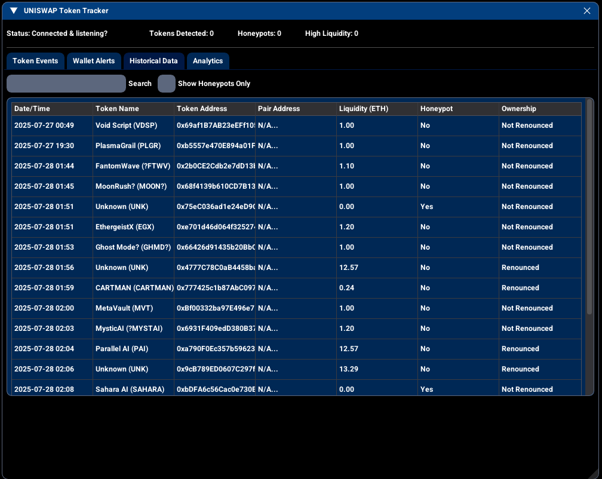
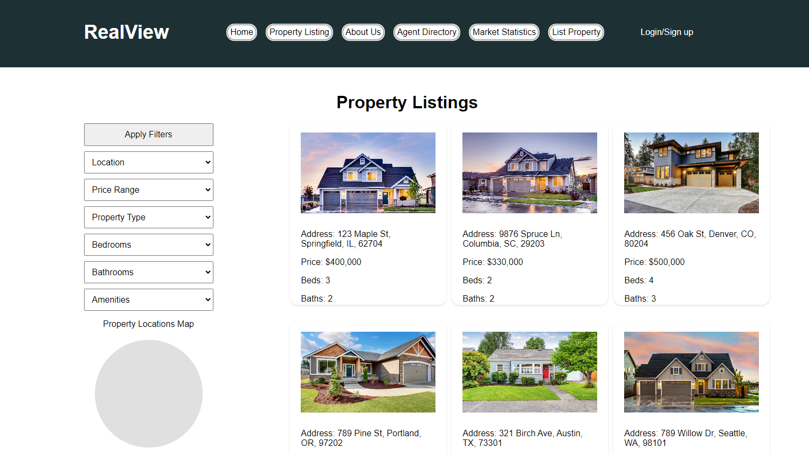

C++ 2D Game Engine
A custom-built 2D game engine using SDL3, designed to support tile-based worlds, interactive entities, and real-time gameplay mechanics.
- Built With: C++, SDL3, SDL3_image, SDL3_ttf, TinyXML2, CMake
- Features:
- Polymorphic entity system with Player/Enemy classes
- Dynamic camera movement and zoom scaling
- Tile-based world rendering and chunk parsing
- Procedural terrain generation with cellular automata
- Break/place tile mechanics and inventory
- HUD rendering and map background switching
- Highlights: Smooth game loop with delta time, real-time event handling, and pixel-perfect collision detection using AABB

Uniswap Token & Wallet Tracker
A real-time monitoring and analysis tool for Uniswap, built with Python, Web3.py, and Dear PyGui. It detects new liquidity pairs, analyzes token safety(a little), and tracks wallet activity for known addresses.
- Built With: Python, Web3.py, Dear PyGui, dotenv
- Features:
- Live detection of new Uniswap pair creations
- Automated honeypot, ownership, and liquidity checks
- Wallet monitoring for tracked addresses
- Interactive GUI with token events and history
- Persistent JSON logging for later review
- Highlights: Real-time blockchain event handling and an integrated GUI dashboard

RealView – Real Estate Platform
A dynamic real estate website built with React, Node.js, and MongoDB, featuring full CRUD functionality and responsive design for both desktop and mobile.
- Built With: React, Node.js, Express, MongoDB, Render, CSS Grid/Flexbox
- Features:
- Admin dashboard to add, edit, and delete listings
- MongoDB backend with secure API routing and user management
- Render-hosted Node.js server with RESTful endpoints
- Responsive front-end with reusable React components
- Clean UI styled using CSS Flexbox, Grid, and media queries
- Highlights: Full-stack CRUD operations, modular React codebase, mobile-first layout